How I became the family genealogistComo virei o genealogista da famíliaComment je suis devenu le généalogiste de la famille
I wanted to know more about where my family came from. Nobody could tell me much beyond my great-grandparents, so I went looking.
Go straight to the family tree
I took a car and drove from town to town in the state of Rio de Janeiro: Três Rios, Sapucaia, Sumidouro, Teresópolis, Carmo and others. In each one I asked the registry office and the parish for the old books and copied what I found. The rest was done at a screen, during countless hours on FamilySearch, turning digitised registers one page at a time.
I did not do this alone. My friend Edinei Santin worked through the records with me, and without him I would not have found most of what is on this page. In 2015 we bound the microfilm images into a small book for the family.
The Italian line: Giovanni and Maria Dammiano
My great-great-grandmother was known in Brazil as Maria Damião. The name on her parents' records is Dammiano, and the trail leads to Maratea, a town on the coast of Basilicata in southern Italy.

Giovanni Dammiano was born there on 4 September 1839, the son of Nicola Dammiano, a farm labourer, and Fortuna Schettino. Later records give his own trade as coppersmith. In 1872 he married Maria Teresa Dammiano, born in 1844 to Giuseppe Dammiano and Anna Maria Fiorenzano. Their first son, Nicola, was born in Maratea in October 1873. Some years later the family was in Brazil, where their daughter Maria married José Domingos Gomes in 1895. Maria's daughter Palmyra, born in 1909, was my great-grandmother.
Finding these records had a practical consequence. Italian citizenship passes by descent, but for a line that runs through a woman who had her children before 1948 it has to be recognised by a court in Rome. We found the lawyer who had built the case law for this maternal route, and he took our case. I am an Italian citizen today because of a birth record from 1839.
Julio José Vieira of Sumidouro
On the other side of the same branch is Julio José Vieira, my great-great-grandfather. Two court files kept in Sumidouro tell most of what I know about him: the 1924 inventory opened after the death of his wife, and the will he dictated in 1946. I photographed both, page by page, in January 2016.
Julio was born on 6 November 1872 in the municipality of Teresópolis, the son of Tolentino José Vieira and Rosa Candida Vieira. He married Eponina Evia Vieira, and they had eleven children: Antônio Francisco (my great-grandfather), Julio José Junior, Maria dos Anjos, Thereza, João, Sophia, Moysés, Francisco, Eugenio, Carlos Magno and Maria.
Eponina died at home on 30 March 1923, aged 49, without a will. The youngest child was ten. In February 1924 Julio, described as a landowner, opened the inventory of the couple's property through a lawyer from Nova Friburgo.
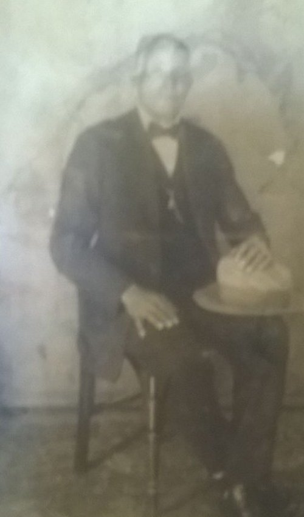

The inventory lists two properties. In Sumidouro, the family lived at the chácara Barra de São Lourenço, beside the Paquequer river: a tiled house with shop fittings and a counter for trade, family rooms, a kitchen, an orchard and a corn crib. In Aparecida, in the neighbouring municipality of Sapucaia, Julio owned the Fazenda Boa Vista, a coffee farm of about 470 alqueires with 37,000 coffee trees, 22 houses for tenant workers, a coffee mill, an iron cane mill, twelve pack mules, six yokes of oxen and ten cows.
The court valued the whole estate at 123 contos de réis (123:100$380), with no debts. Half stayed with Julio. The other half, after a 2% inheritance tax, was divided among the eleven children: 5:428$289 each. For scale, the same appraisers valued a cow at 97 mil-réis and a pack mule at 300.
Five years later he appears in the Rio de Janeiro newspaper O Paiz, on 21 August 1929. A telegram from Sumidouro to the president of the state reports that the convention of the Partido Municipal had chosen its candidates for mayor and for the town council, and Julio José Vieira is one of the names put forward for councillor.
After Eponina's death Julio lived with Enoe Rodrigues de Aguiar, and they had six more children: Margarida, Geraldo, Malvina, Sebastião, Tolentino and Julio. On 8 July 1946, ill, in a house on Rua Linha Férrea in Sumidouro, he dictated his will to the notary before five witnesses, among them a physician, two Portuguese merchants and an Italian landowner. Its main purpose was to recognise the six younger children as legitimate, with the same rights as the others. He set aside their shares in the lands of the Fazenda do Rosa e Baião, made every child's share inalienable for life, and named his brother Antonio José Vieira guardian of the minors and executor. Julio died on 2 September 1946, and the will was presented to the judge two weeks later.
Read the full study of the inventory and the willRead the page about Julio José Vieira
My mother's side: from Sumidouro to Aparecida
The Italian line and Julio José Vieira, above, both belong to my mother's family. In 2016 and 2017 I photographed what her relatives keep: certificates folded in four, framed portraits, and small photographs whose only captions are the names someone wrote on the back.
A wedding in 1895
On 3 August 1895, in the chapel of Senhor dos Passos, which was serving as the parish church of Sumidouro, José Domingos Gomes, aged 27, married Maria Damiana, not yet 16. The priest recorded him as the son of Domingos Gomes, a Portuguese farmer, and Maria Rocha, and her as the daughter of João Damião, an Italian merchant, and Thereza Damiana, also Italian. The groom signed the entry. The bride did not, because she could not write. Maria had been baptised in the same parish on 24 August 1878, five weeks after she was born.
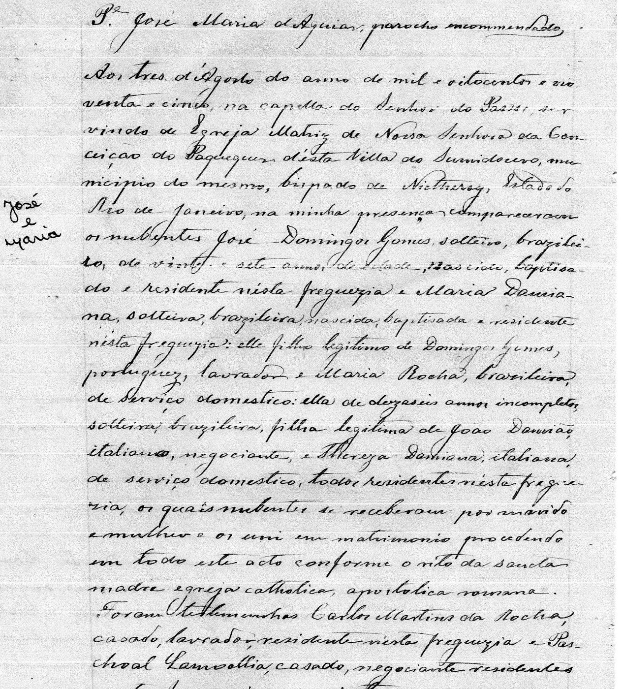
This is the page where Giovanni Dammiano of Maratea has already become João Damião. That change of spelling later cost us some work: to prove the line back to Italy, my mother and I asked the public defender's office in Sapucaia to have the civil records corrected from Damião to Dammiano, entry by entry.
Antônio Francisco and Palmyra
José and Maria's daughter Palmyra, born in 1909, married Antônio Francisco Vieira, a son of Julio José Vieira, in Sumidouro in 1925. He was born in 1898 and died in 1955. Their daughter Esmerinda, my grandmother, was born in Aparecida in November 1934.
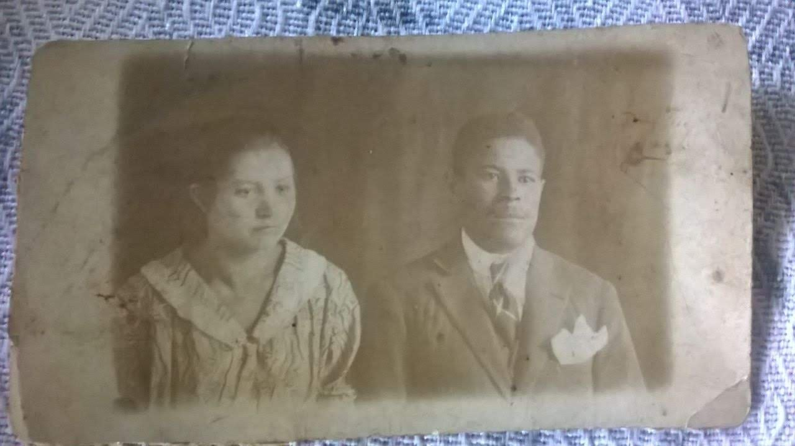
The backs of the small photographs do the rest: "João Vieira (uncle of Esmerinda) and Dona Rosária", "the one in the middle is Maria Vieira (aunt of Esmerinda)", "Sr. Moysés José Vieira". João, Maria and Moysés are all on the list of Julio's children in the 1924 inventory. Here they have faces.
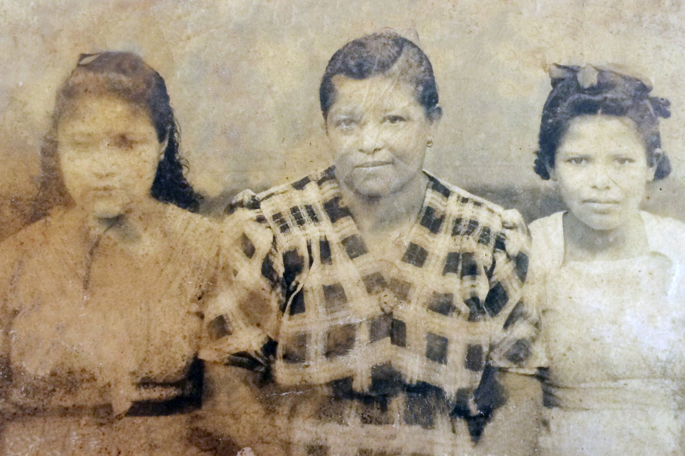
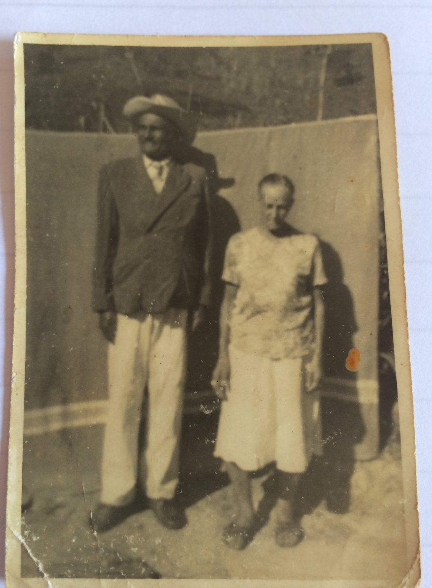
Jovino and Didima
On my grandfather's side, Jovino da Cruz Silva was born in Aparecida on 10 December 1895, the son of Ricardo Antônio Cruz and Leopoldina Maria da Conceição. He married Didima Davila Esteves there on 18 November 1916. Their son's marriage certificate calls him Jovino Ricardo da Silva: his father's first name had become part of the surname, and it has stayed in the family ever since. Didima died in 1974 and Jovino in 1979.
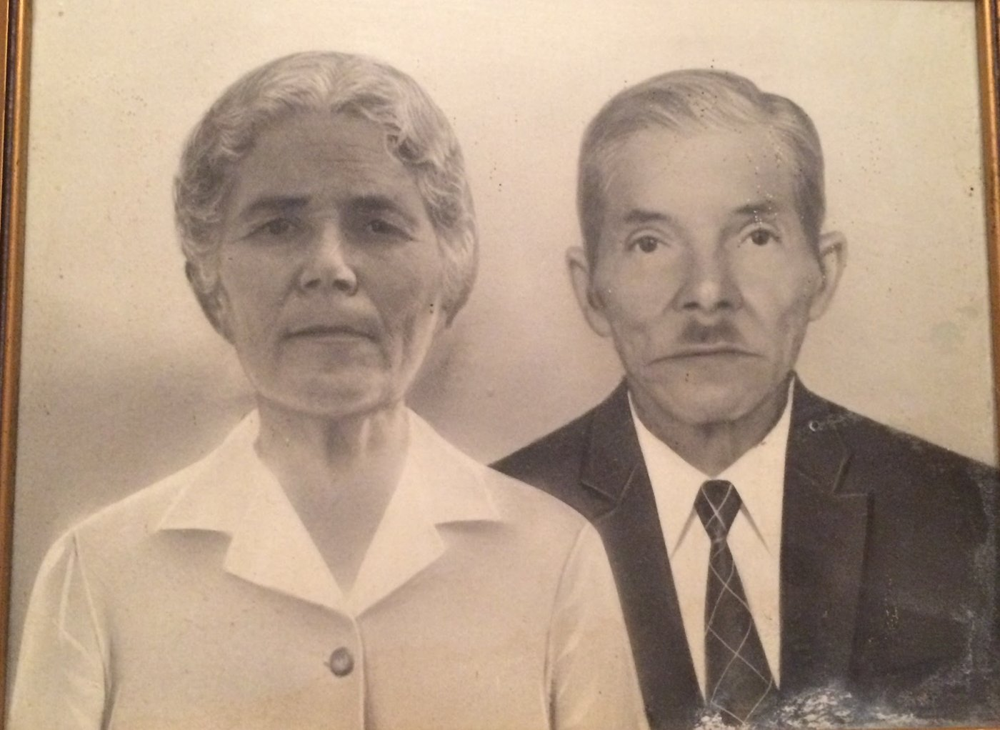
Carlito and Esmerinda
Their son Carlito Ricardo da Silva was born on 22 November 1930. On 31 October 1950, in Vila Nossa Senhora Aparecida, he married Esmerinda Gomes Vieira, a week before her sixteenth birthday. The certificate gives his profession as farmer and notes that the banns were waived by order of the judge. A later membership card of the rural union of Sapucaia still lists him as a rural producer. They are my mother's parents.
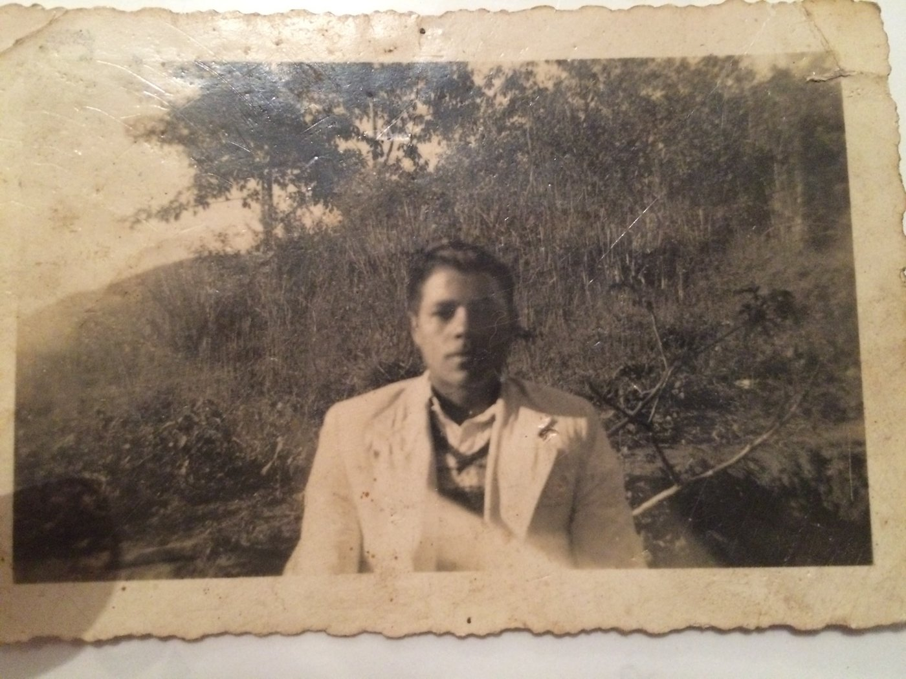
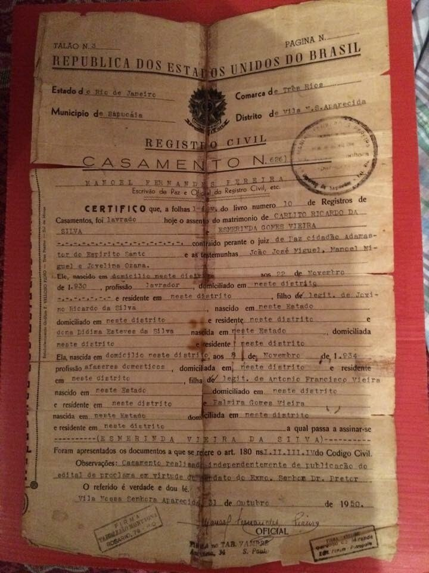
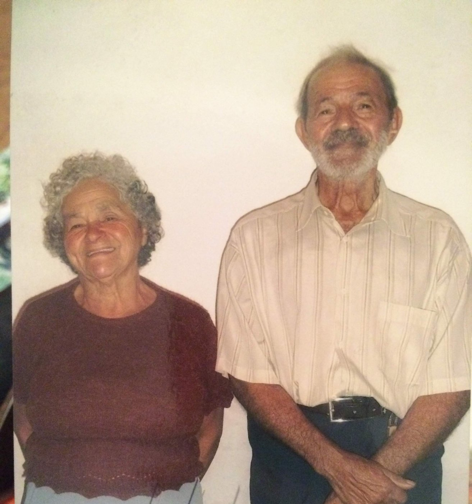
Reading the cemetery books
Not every answer was in a registry office. On 28 December 2017 I spent an afternoon in Sumidouro with the burial registers of the cemetery of the parish of Nossa Senhora da Conceição do Paquequer, reading line after line of names and ages to find where the family is buried, and then walked the cemetery itself.
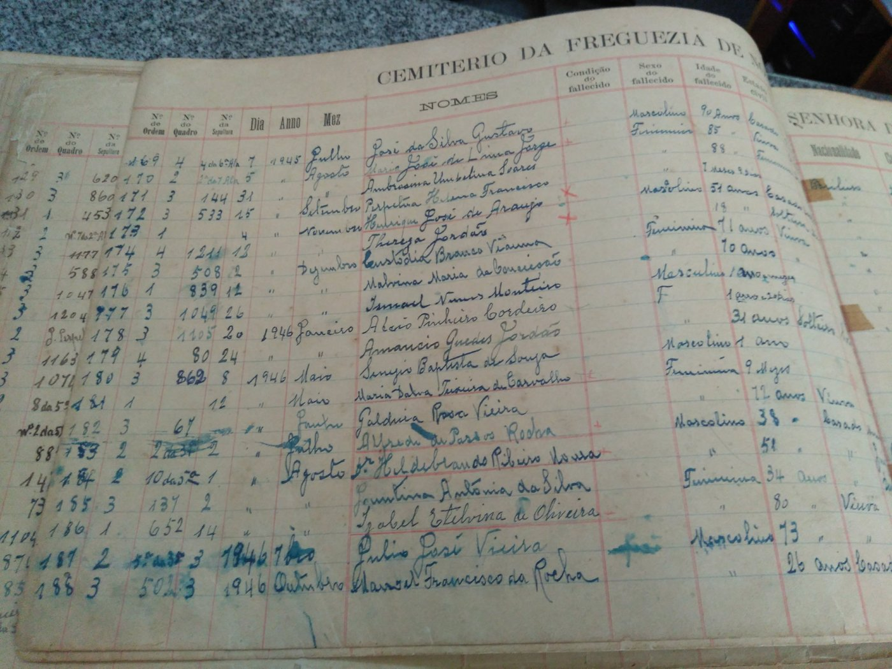
My father's side: the Oliveiras of Minas Gerais
For my father's family I needed fewer archives and more drawers. In 2019 and 2021 I photographed the albums and papers the family keeps in Três Rios, and I found that distant cousins had already put pieces of the same story online. Put together, they go back five generations, to the hills between Juiz de Fora and São João del-Rei.
Umbelina and the church of Olaria
João Caetano Rodrigues and Umbelina Josephina da Cunha married in 1848 in Santo Antônio da Olaria, today the small town of Olaria. She was born in 1832 and lived until 1930. The town's official history gives her a part in how it got its patron saint. Isidoro, a man enslaved on the couple's farm, the Fazenda Passa Tempo, went missing, and Umbelina prayed to Saint Anthony for his return. He came back saying that a man in a dark habit had shown him the way out of the forest. Umbelina promised a chapel and obtained the saint's image from the diocese of Mariana. Building began in 1869 and the church opened in 1872. It is a story of devotion, and also a plain record that my ancestors held people in slavery.
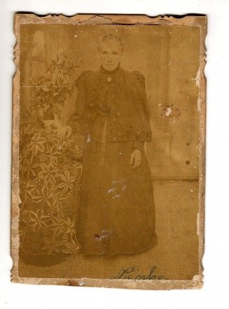
Two of their children are my ancestors: Eloy Praxedes Braga and Luiza Josephina. Eloy's son and Luiza's daughter, first cousins, married in 1921 and became my great-grandparents, which is why Umbelina appears twice in my tree.
Antônio Carlos and Ignácia, and where the name Oliveira comes from
Ignácia Cassiana da Cunha (1844–1899) and Antônio Carlos de Oliveira (1840–1910) were both from Conceição de Ibitipoca. In 1879 they bought the Fazenda do Rio do Peixe, in Resende Costa. According to a printed family panel that reproduces their portraits, the surname Oliveira came from a farm of that name owned by Antônio Carlos's father in São Domingos da Bocaina, and the couple left 14 children and 102 grandchildren.
A study of the family by Vinícius da Mata Oliveira, published in São Tiago's cultural bulletin in June 2020, settles what the databases only guessed at. Antônio Carlos de Oliveira and Umbelina Josefina were indeed brother and sister, children of Colonel José Caetano Rodrigues (1791–1864) and Antônia Teodora de São José — so Elóy and Ana Cândida were first cousins, and marrying a cousin was a habit in this house rather than an accident. It also explains the surnames: the children of that one couple appear in the records as Moreira, da Cunha, Rodrigues and de Oliveira. A surname was something a child was given, not something a line carried.
The same study takes the name a long way back beyond the farm. José Caetano's father was the ensign José Rodrigues de Oliveira, and his grandmother Bernardina Caetana do Sacramento was a daughter of José Dutra, born in Flamengos on the island of Faial in 1711 and the first of the family to cross to Brazil, and of Francisca Maria do Sacramento, born in Angra do Heroísmo on Terceira. Behind them, on the island of Pico, stands a Francisco de Oliveira born around 1660 — the oldest Oliveira the records reach. The Oliveira in my own name is therefore a good deal older than the fazenda da Oliveira at São Domingos da Bocaina: the farm cannot be where the name began.
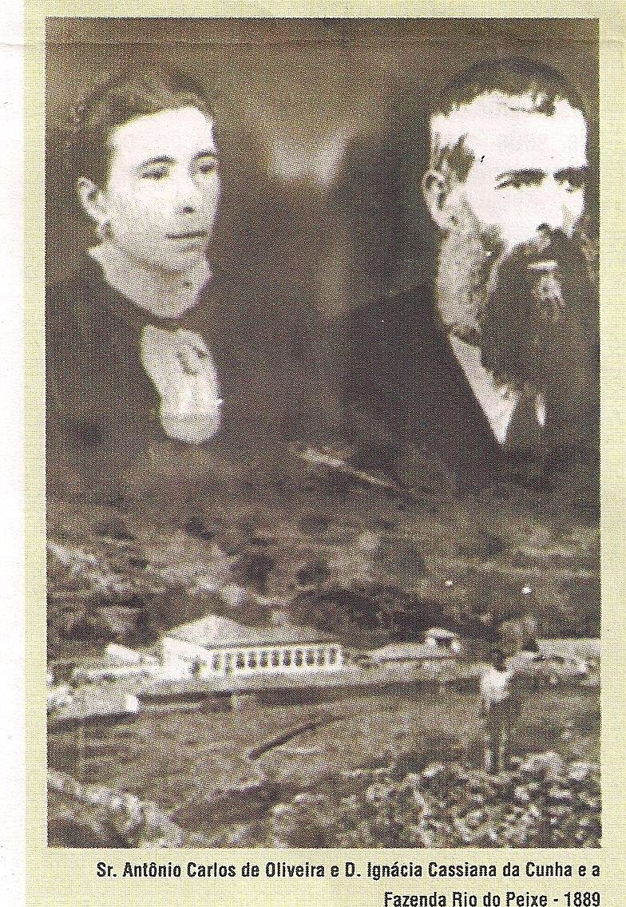
The family kept studio portraits of several of their children, with captions written across them: Maria José with her husband Aristides B. Gomes at Rio do Peixe in March 1906, Evaristo at the Fazenda Paciência the same year, Francisco in Ibitipoca in 1907, Izaltina in 1910. A descendant of Maria José, Peter Gomes Romeiro, published a family page in 1999 that records her birth at the farm on 16 December 1888.
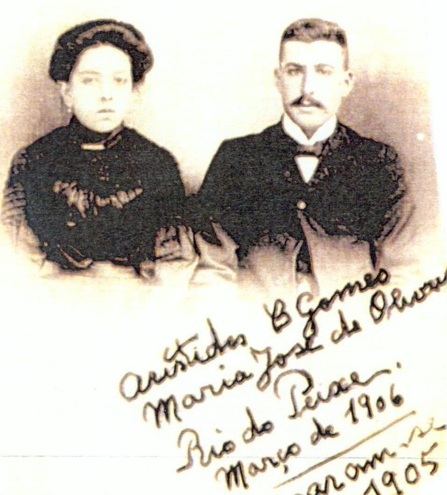
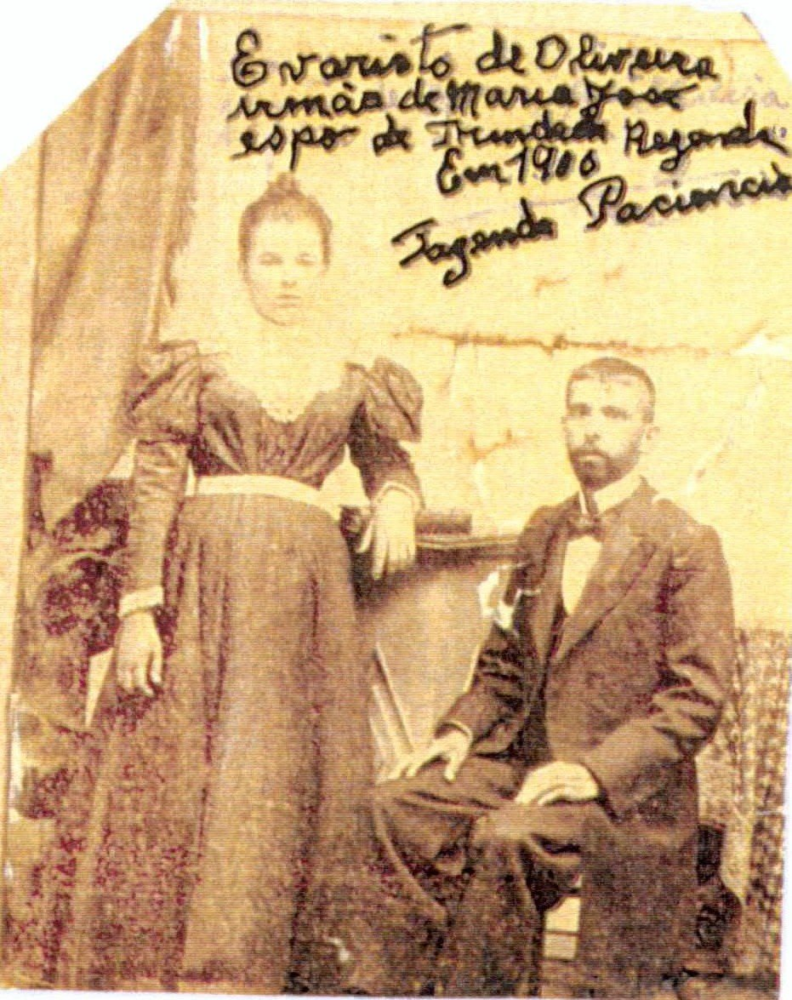
That page also tells a family legend: a fortune in gold left in a London bank by the Barão de Cocais and never claimed in time by his descendants, of whom Ignácia's father would be one. The records I have give her father, Francisco Rodrigues da Cunha (1794–1867), different parents, so I keep it as a good story and nothing more.
Further back, Ignácia's line reaches Júlia Maria da Caridade (1707–1787), born on the island of Faial in the Azores and buried in São João del-Rei. She was one of the three sisters known in Minas Gerais genealogy as the Três Ilhoas.
Eloy, Donana and Queijo Brazil
Their daughter Anna Cândida da Cunha, Donana, married Eloy Praxedes Braga, Umbelina's son. Both were born in 1868. Around the turn of the century they lived in Benfica, then a railway stop outside Juiz de Fora and now one of its districts, where my great-grandfather was born in 1896. A printed label survives from those years.
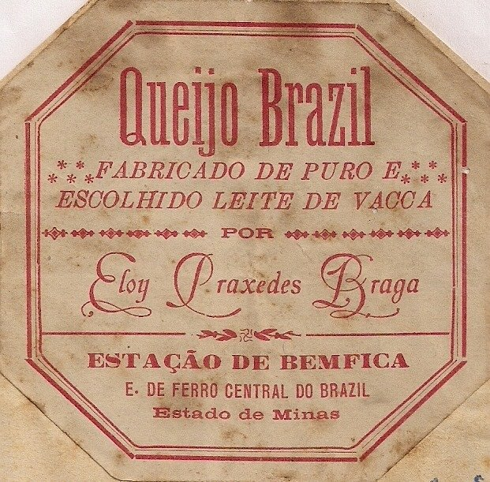
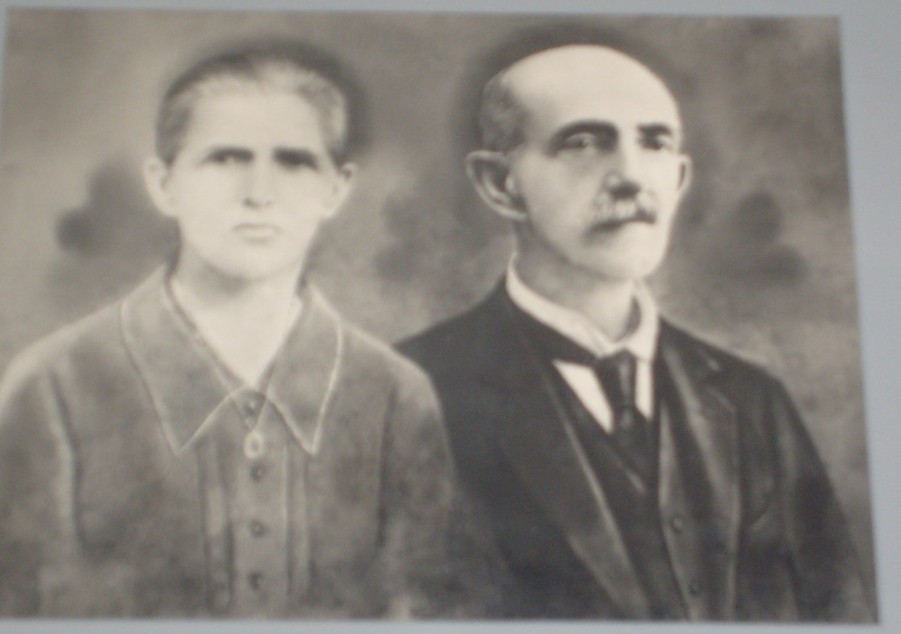
One of their sons, Jesus de Oliveira, born in Olaria, was a 21-year-old printer when he founded a newspaper in Benfica on 9 January 1912, at first produced by hand. O Lynce, later O Lince, came out in Juiz de Fora until 1979, and Jesus ran it until his death in 1967. On 18 February 1939 its front page carried the obituary of the director's own mother: Anna Cândida had died on the family farm in Serraria, in the state of Rio, in the night of 14 to 15 February, aged 71. Eloy died there the following year.
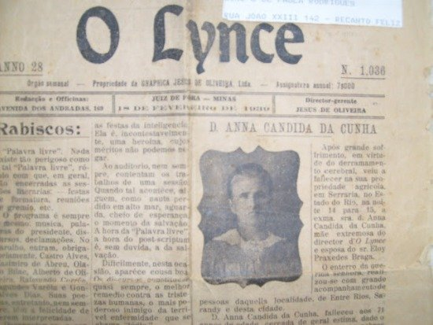
Antônio and Milota
My great-grandfather Antônio Carlos Rodrigues de Oliveira was born in Benfica on 31 July 1896. On 30 July 1921, a farmer living in Mont Serrat, he married his cousin Claudemira Anivalda da Cunha, known all her life as Milota, at the registry of São Domingos da Bocaina. She was born in Santo Antônio da Olaria in 1895, the daughter of Luiza Josephina. They later settled in Três Rios, where he died in 1966 and she in 1975.
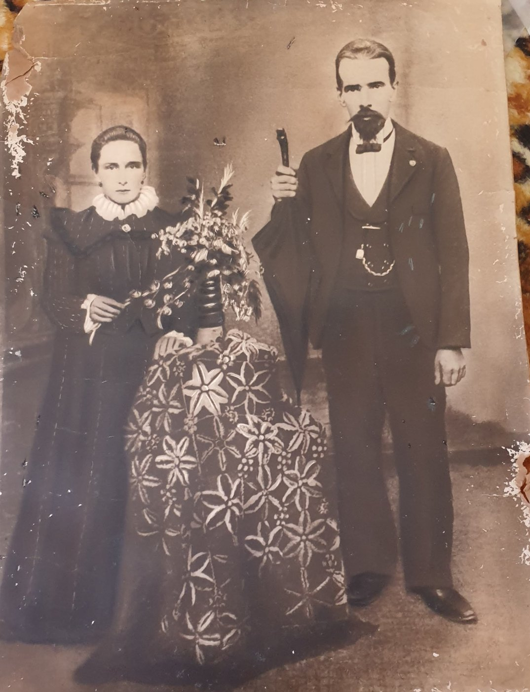
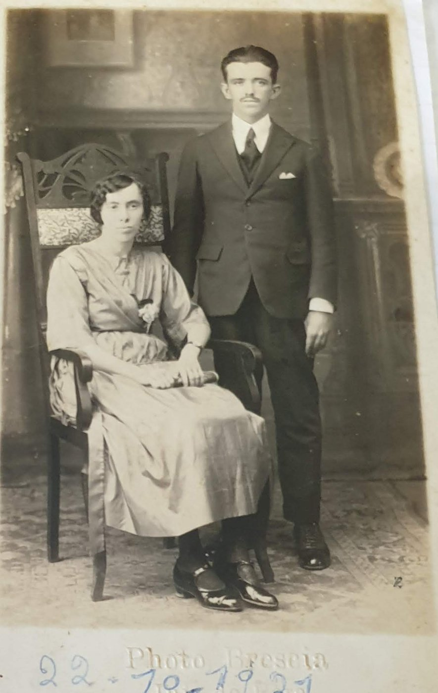
José Carlos and Zeni: a café on the square
Their son José Carlos de Oliveira, my grandfather, was born in 1927. His first work card records a job as a waiter at a café and bar at number 13, Praça Visconde do Rio Novo, in Três Rios, from January to August 1947, for 350 cruzeiros. In February 1954 he and his father registered their own business at the same address, the Bar e Café Ideal. That July he became engaged to Zeni Monteiro Dias, daughter of Tolentino Monteiro Dias and Emília Rita, and they married on 4 May 1955, with the religious ceremony at the Matriz de São Sebastião. In the 1970s he moved on to a butcher's shop, the Açougue Barão de Entre Rios.
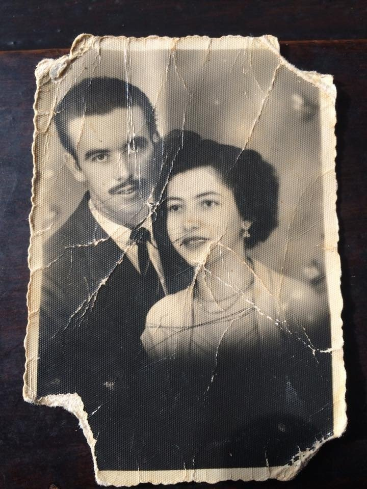
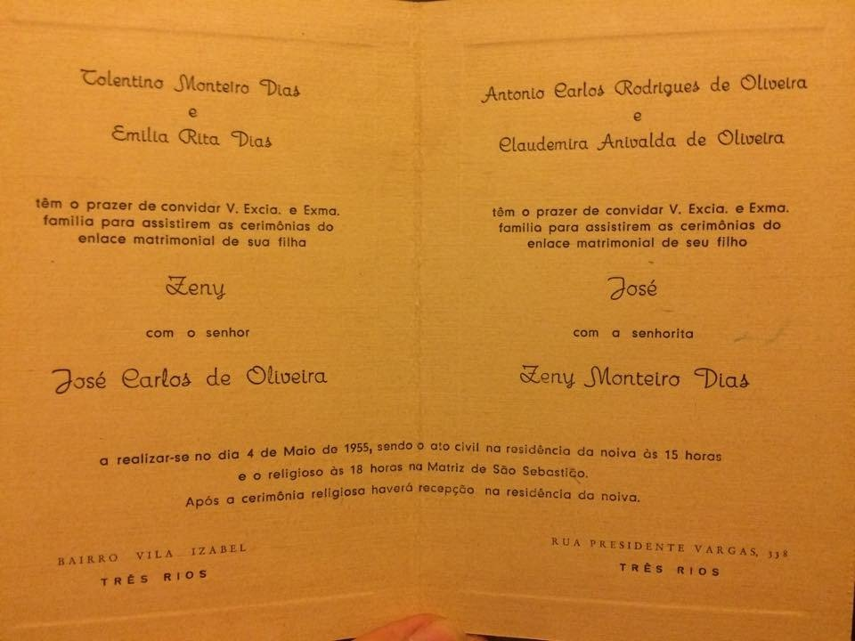
Zeni died in 2010. José Carlos died in July 2021, a few days after turning 94.
Sources beyond the family papers: the history of Olaria by Elcio Moreira de Paula, published by the town hall; the Arquivo Central of UFJF on O Lince; and the Oliveira Gomes family page by Peter Gomes Romeiro; and, for the Oliveira line above Umbelina, “A História dos Oliveira” by Vinícius da Mata Oliveira, in the Boletim Cultural e Memorialístico de São Tiago e Região of June 2020, which is the source followed here, alongside GeneaMinas and a Geneanet tree.
The tree
The tree starts at my four grandparents and goes up. On my father's side it reaches Minas Gerais in the 1700s and, before that, northern Portugal and the Azores. Select a branch, then select a person to show or hide their parents.
Eu queria saber mais sobre a origem da minha família. Ninguém sabia me dizer muito além dos meus bisavós, então fui procurar.
Ir direto para a árvore genealógica
Peguei um carro e fui de cidade em cidade no estado do Rio de Janeiro: Três Rios, Sapucaia, Sumidouro, Teresópolis, Carmo e outras. Em cada uma pedi os livros antigos no cartório e na paróquia e copiei o que encontrei. O resto foi feito diante de uma tela, em incontáveis horas no FamilySearch, virando registros digitalizados uma página de cada vez.
Não fiz isso sozinho. Meu amigo Edinei Santin pesquisou os registros comigo, e sem ele eu não teria encontrado a maior parte do que está nesta página. Em 2015 reunimos as imagens dos microfilmes em um pequeno livro para a família.
A linha italiana: Giovanni e Maria Dammiano
Minha trisavó era conhecida no Brasil como Maria Damião. O nome nos registros dos pais dela é Dammiano, e a trilha leva a Maratea, cidade na costa da Basilicata, no sul da Itália.
Giovanni Dammiano nasceu ali em 4 de setembro de 1839, filho de Nicola Dammiano, lavrador, e Fortuna Schettino. Registros posteriores dão seu ofício como caldeireiro. Em 1872 casou-se com Maria Teresa Dammiano, nascida em 1844, filha de Giuseppe Dammiano e Anna Maria Fiorenzano. O primeiro filho, Nicola, nasceu em Maratea em outubro de 1873. Alguns anos depois a família estava no Brasil, onde a filha Maria se casou com José Domingos Gomes em 1895. Palmyra, filha de Maria, nascida em 1909, foi minha bisavó.
Encontrar esses registros teve uma consequência prática. A cidadania italiana se transmite por descendência, mas quando a linha passa por uma mulher que teve seus filhos antes de 1948 ela precisa ser reconhecida por um tribunal em Roma. Encontramos o advogado que construiu a jurisprudência dessa via materna, e ele assumiu nosso caso. Hoje sou cidadão italiano por causa de um registro de nascimento de 1839.
Julio José Vieira, de Sumidouro
Do outro lado do mesmo ramo está Julio José Vieira, meu trisavô. Dois processos guardados em Sumidouro contam a maior parte do que sei sobre ele: o inventário de 1924, aberto após a morte da esposa, e o testamento que ele ditou em 1946. Fotografei os dois, página por página, em janeiro de 2016.
Julio nasceu em 6 de novembro de 1872 no município de Teresópolis, filho de Tolentino José Vieira e Rosa Candida Vieira. Casou-se com Eponina Evia Vieira, e tiveram onze filhos: Antônio Francisco (meu bisavô), Julio José Junior, Maria dos Anjos, Thereza, João, Sophia, Moysés, Francisco, Eugenio, Carlos Magno e Maria.
Eponina faleceu em casa em 30 de março de 1923, aos 49 anos, sem testamento. A filha mais nova tinha dez anos. Em fevereiro de 1924 Julio, qualificado como proprietário, abriu o inventário dos bens do casal por meio de um advogado de Nova Friburgo.
O inventário descreve duas propriedades. Em Sumidouro, a família morava na chácara Barra de São Lourenço, à beira do rio Paquequer: uma casa coberta de telhas com armação e balcão para negócio, acomodações para a família, cozinha, pomar e paiol. Em Aparecida, no município vizinho de Sapucaia, Julio era dono da Fazenda Boa Vista, uma fazenda de café com cerca de 470 alqueires, 37 mil pés de café, 22 casas de colonos, engenho de café, engenho de ferro para cana, doze burros de carga, seis juntas de bois e dez vacas.
O juízo avaliou todo o espólio em 123 contos de réis (123:100$380), sem dívidas. Metade ficou com Julio. A outra metade, depois do imposto de 2% sobre a herança, foi dividida entre os onze filhos: 5:428$289 para cada um. Para dar uma ideia, os mesmos avaliadores estimaram uma vaca em 97 mil-réis e um burro de carga em 300.
Cinco anos depois ele aparece no jornal carioca O Paiz, em 21 de agosto de 1929. Um telegrama de Sumidouro ao presidente do Estado informa que a convenção do Partido Municipal havia escolhido seus candidatos a prefeito e a vereador, e Julio José Vieira é um dos nomes indicados para vereador.
Depois da morte de Eponina, Julio viveu com Enoe Rodrigues de Aguiar, e tiveram mais seis filhos: Margarida, Geraldo, Malvina, Sebastião, Tolentino e Julio. Em 8 de julho de 1946, doente, em uma casa na Rua Linha Férrea, em Sumidouro, ditou seu testamento ao tabelião diante de cinco testemunhas, entre elas um médico, dois comerciantes portugueses e um proprietário italiano. O objetivo principal era reconhecer os seis filhos mais novos como legítimos, com os mesmos direitos dos demais. Reservou as legítimas deles nas terras da Fazenda do Rosa e Baião, gravou a parte de todos os filhos com inalienabilidade vitalícia e nomeou o irmão Antonio José Vieira tutor dos menores e testamenteiro. Julio morreu em 2 de setembro de 1946, e o testamento foi apresentado ao juiz duas semanas depois.
Ler o estudo completo do inventário e do testamentoLer a página sobre Julio José Vieira
O lado da minha mãe: de Sumidouro a Aparecida
A linha italiana e Julio José Vieira, acima, pertencem ambos à família da minha mãe. Em 2016 e 2017 fotografei o que os parentes dela guardam: certidões dobradas em quatro, retratos emoldurados e fotografias pequenas cuja única legenda são os nomes que alguém escreveu no verso.
Um casamento em 1895
Em 3 de agosto de 1895, na capela do Senhor dos Passos, que servia de igreja matriz de Sumidouro, José Domingos Gomes, de 27 anos, casou-se com Maria Damiana, que ainda não tinha 16. O padre o registrou como filho de Domingos Gomes, português, lavrador, e de Maria Rocha, e ela como filha de João Damião, italiano, negociante, e de Thereza Damiana, também italiana. O noivo assinou o assento. A noiva não, por não saber escrever. Maria tinha sido batizada na mesma paróquia em 24 de agosto de 1878, cinco semanas depois de nascer.
Esta é a página em que Giovanni Dammiano, de Maratea, já virou João Damião. Essa mudança de grafia nos deu trabalho mais tarde: para provar a linha até a Itália, minha mãe e eu pedimos à Defensoria Pública de Sapucaia a retificação dos registros civis de Damião para Dammiano, assento por assento.
Antônio Francisco e Palmyra
A filha de José e Maria, Palmyra, nascida em 1909, casou-se com Antônio Francisco Vieira, filho de Julio José Vieira, em Sumidouro, em 1925. Ele nasceu em 1898 e morreu em 1955. A filha deles, Esmerinda, minha avó, nasceu em Aparecida em novembro de 1934.
O verso das fotografias pequenas faz o resto: "João Vieira (tio de Esmerinda) e Dona Rosária", "a do meio Maria Vieira (tia de Esmerinda)", "Sr. Moysés José Vieira". João, Maria e Moysés estão todos na lista dos filhos de Julio no inventário de 1924. Aqui eles têm rosto.
Jovino e Didima
Do lado do meu avô, Jovino da Cruz Silva nasceu em Aparecida em 10 de dezembro de 1895, filho de Ricardo Antônio Cruz e Leopoldina Maria da Conceição. Casou-se ali com Didima Davila Esteves em 18 de novembro de 1916. A certidão de casamento do filho o chama de Jovino Ricardo da Silva: o primeiro nome do pai tinha virado parte do sobrenome, e ficou na família desde então. Didima morreu em 1974 e Jovino em 1979.
Carlito e Esmerinda
O filho deles, Carlito Ricardo da Silva, nasceu em 22 de novembro de 1930. Em 31 de outubro de 1950, na Vila Nossa Senhora Aparecida, casou-se com Esmerinda Gomes Vieira, uma semana antes de ela completar dezesseis anos. A certidão dá a profissão dele como lavrador e registra que os proclamas foram dispensados por ordem do juiz. Uma carteira posterior do sindicato rural de Sapucaia ainda o apresenta como produtor rural. Eles são os pais da minha mãe.
Lendo os livros do cemitério
Nem toda resposta estava num cartório. Em 28 de dezembro de 2017 passei uma tarde em Sumidouro com os livros de sepultamento do cemitério da freguesia de Nossa Senhora da Conceição do Paquequer, lendo linha após linha de nomes e idades para descobrir onde a família está enterrada, e depois percorri o próprio cemitério.
O lado do meu pai: os Oliveira de Minas Gerais
Para a família do meu pai precisei de menos arquivos e de mais gavetas. Em 2019 e 2021 fotografei os álbuns e papéis que a família guarda em Três Rios, e descobri que primos distantes já tinham colocado na internet pedaços da mesma história. Juntos, eles recuam cinco gerações, até os morros entre Juiz de Fora e São João del-Rei.
Umbelina e a igreja de Olaria
João Caetano Rodrigues e Umbelina Josephina da Cunha se casaram em 1848 em Santo Antônio da Olaria, hoje a pequena cidade de Olaria. Ela nasceu em 1832 e viveu até 1930. A história oficial do município dá a ela um papel na escolha do padroeiro. Isidoro, um homem escravizado na fazenda do casal, a Fazenda Passa Tempo, desapareceu, e Umbelina rezou a Santo Antônio pela sua volta. Ele voltou contando que um homem de hábito escuro lhe havia mostrado o caminho para sair da mata. Umbelina prometeu uma capela e conseguiu a imagem do santo na diocese de Mariana. A construção começou em 1869 e a igreja foi inaugurada em 1872. É uma história de devoção, e também um registro claro de que meus antepassados mantiveram pessoas escravizadas.
Dois dos filhos deles são meus antepassados: Eloy Praxedes Braga e Luiza Josephina. O filho de Eloy e a filha de Luiza, primos-irmãos, casaram-se em 1921 e se tornaram meus bisavós. É por isso que Umbelina aparece duas vezes na minha árvore.
Antônio Carlos e Ignácia, e de onde vem o nome Oliveira
Ignácia Cassiana da Cunha (1844–1899) e Antônio Carlos de Oliveira (1840–1910) eram ambos de Conceição de Ibitipoca. Em 1879 compraram a Fazenda do Rio do Peixe, em Resende Costa. Segundo um painel impresso da família que reproduz os retratos dos dois, o sobrenome Oliveira veio de uma fazenda com esse nome, do pai de Antônio Carlos, em São Domingos da Bocaina, e o casal deixou 14 filhos e 102 netos.
Um estudo da família escrito por Vinícius da Mata Oliveira, publicado no boletim cultural de São Tiago em junho de 2020, resolve o que os bancos de dados só adivinhavam. Antônio Carlos de Oliveira e Umbelina Josefina eram mesmo irmãos, filhos do Coronel José Caetano Rodrigues (1791–1864) e de Antônia Teodora de São José — de modo que Elóy e Ana Cândida eram primos-irmãos, e casar com prima era costume desta casa, não acaso. Isso também explica os sobrenomes: os filhos desse mesmo casal aparecem nos registros como Moreira, da Cunha, Rodrigues e de Oliveira. O sobrenome era algo que se dava a cada filho, não algo que a linhagem carregava.
O mesmo estudo leva o nome para muito antes da fazenda. O pai de José Caetano foi o alferes José Rodrigues de Oliveira, e a avó dele, Bernardina Caetana do Sacramento, era filha de José Dutra, nascido em Flamengos, na ilha do Faial, em 1711, o primeiro da família a vir para o Brasil, e de Francisca Maria do Sacramento, nascida em Angra do Heroísmo, na Terceira. Atrás deles, na ilha do Pico, está um Francisco de Oliveira nascido por volta de 1660 — o Oliveira mais antigo que os registros alcançam. O Oliveira do meu nome é, portanto, bem mais velho que a fazenda da Oliveira de São Domingos da Bocaina: a fazenda não pode ser onde o nome começou.
A família guardou retratos de estúdio de vários dos filhos, com legendas escritas por cima: Maria José com o marido Aristides B. Gomes no Rio do Peixe em março de 1906, Evaristo na Fazenda Paciência no mesmo ano, Francisco em Ibitipoca em 1907, Izaltina em 1910. Um descendente de Maria José, Peter Gomes Romeiro, publicou em 1999 uma página da família que registra o nascimento dela na fazenda em 16 de dezembro de 1888.
Essa página também conta uma lenda de família: uma fortuna em ouro deixada num banco de Londres pelo Barão de Cocais e nunca reclamada a tempo pelos descendentes, entre os quais estaria o pai de Ignácia. Os registros que tenho dão ao pai dela, Francisco Rodrigues da Cunha (1794–1867), outros pais, então guardo o caso como uma boa história e nada mais.
Mais para trás, a linha de Ignácia chega a Júlia Maria da Caridade (1707–1787), nascida na ilha do Faial, nos Açores, e sepultada em São João del-Rei. Ela foi uma das três irmãs conhecidas na genealogia mineira como as Três Ilhoas.
Eloy, Donana e o Queijo Brazil
A filha deles, Anna Cândida da Cunha, a Donana, casou-se com Eloy Praxedes Braga, filho de Umbelina. Os dois nasceram em 1868. Na virada do século moravam em Benfica, então uma parada de trem fora de Juiz de Fora e hoje um dos seus bairros, onde meu bisavô nasceu em 1896. Um rótulo impresso sobreviveu daqueles anos.
Um dos filhos, Jesus de Oliveira, nascido em Olaria, era um gráfico de 21 anos quando fundou um jornal em Benfica, em 9 de janeiro de 1912, no começo feito de forma artesanal. O Lynce, depois O Lince, circulou em Juiz de Fora até 1979, e Jesus o dirigiu até morrer, em 1967. Em 18 de fevereiro de 1939 a primeira página trouxe o obituário da mãe do próprio diretor: Anna Cândida havia falecido na propriedade da família em Serraria, no estado do Rio, na noite de 14 para 15 de fevereiro, aos 71 anos. Eloy morreu lá no ano seguinte.
Antônio e Milota
Meu bisavô Antônio Carlos Rodrigues de Oliveira nasceu em Benfica em 31 de julho de 1896. Em 30 de julho de 1921, lavrador e morador de Mont Serrat, casou-se com a prima Claudemira Anivalda da Cunha, conhecida a vida toda como Milota, no cartório de São Domingos da Bocaina. Ela nasceu em Santo Antônio da Olaria em 1895, filha de Luiza Josephina. Mais tarde se estabeleceram em Três Rios, onde ele morreu em 1966 e ela em 1975.
José Carlos e Zeni: um café na praça
O filho deles, José Carlos de Oliveira, meu avô, nasceu em 1927. Sua primeira carteira profissional registra um emprego de garçom num café e bar no número 13 da Praça Visconde do Rio Novo, em Três Rios, de janeiro a agosto de 1947, por 350 cruzeiros. Em fevereiro de 1954 ele e o pai registraram o próprio negócio no mesmo endereço, o Bar e Café Ideal. Em julho daquele ano ficou noivo de Zeni Monteiro Dias, filha de Tolentino Monteiro Dias e Emília Rita, e os dois se casaram em 4 de maio de 1955, com a cerimônia religiosa na Matriz de São Sebastião. Nos anos 1970 passou para um açougue, o Açougue Barão de Entre Rios.
Zeni morreu em 2010. José Carlos morreu em julho de 2021, poucos dias depois de completar 94 anos.
Fontes além dos papéis da família: a história de Olaria escrita por Elcio Moreira de Paula e publicada pela prefeitura; o Arquivo Central da UFJF sobre O Lince; e a página da família Oliveira Gomes, de Peter Gomes Romeiro; e, para a linhagem Oliveira acima de Umbelina, “A História dos Oliveira”, de Vinícius da Mata Oliveira, no Boletim Cultural e Memorialístico de São Tiago e Região de junho de 2020, que é a fonte seguida aqui, ao lado do GeneaMinas e uma árvore no Geneanet.
A árvore
A árvore começa nos meus quatro avós e sobe. Do lado do meu pai ela chega a Minas Gerais no século XVIII e, antes disso, ao norte de Portugal e aos Açores. Escolha um ramo e depois uma pessoa para mostrar ou esconder os pais dela.
Je voulais en savoir plus sur les origines de ma famille. Personne ne pouvait m'en dire beaucoup au-delà de mes arrière-grands-parents, alors je suis allé chercher.
Aller directement à l'arbre généalogique
J'ai pris une voiture et roulé de ville en ville dans l'État de Rio de Janeiro : Três Rios, Sapucaia, Sumidouro, Teresópolis, Carmo et d'autres. Dans chacune, j'ai demandé les anciens registres à l'état civil et à la paroisse et recopié ce que je trouvais. Le reste s'est fait devant un écran, pendant d'innombrables heures sur FamilySearch, à tourner des registres numérisés une page à la fois.
Je n'ai pas fait cela seul. Mon ami Edinei Santin a dépouillé les registres avec moi, et sans lui je n'aurais pas trouvé l'essentiel de ce qui figure sur cette page. En 2015, nous avons réuni les images des microfilms dans un petit livre pour la famille.
La lignée italienne : Giovanni et Maria Dammiano
Mon arrière-arrière-grand-mère était connue au Brésil sous le nom de Maria Damião. Le nom porté sur les actes de ses parents est Dammiano, et la piste mène à Maratea, une ville de la côte de la Basilicate, dans le sud de l'Italie.
Giovanni Dammiano y est né le 4 septembre 1839, fils de Nicola Dammiano, paysan, et de Fortuna Schettino. Des actes ultérieurs le disent chaudronnier. En 1872, il a épousé Maria Teresa Dammiano, née en 1844 de Giuseppe Dammiano et Anna Maria Fiorenzano. Leur premier fils, Nicola, est né à Maratea en octobre 1873. Quelques années plus tard, la famille était au Brésil, où leur fille Maria a épousé José Domingos Gomes en 1895. Palmyra, la fille de Maria, née en 1909, était mon arrière-grand-mère.
Retrouver ces actes a eu une conséquence pratique. La nationalité italienne se transmet par filiation, mais lorsque la lignée passe par une femme qui a eu ses enfants avant 1948, elle doit être reconnue par un tribunal à Rome. Nous avons trouvé l'avocat qui avait construit la jurisprudence de cette voie maternelle, et il a pris notre dossier. Je suis aujourd'hui citoyen italien grâce à un acte de naissance de 1839.
Julio José Vieira, de Sumidouro
De l'autre côté de la même branche se trouve Julio José Vieira, mon arrière-arrière-grand-père. Deux dossiers judiciaires conservés à Sumidouro racontent l'essentiel de ce que je sais de lui : l'inventaire de 1924, ouvert après la mort de sa femme, et le testament qu'il a dicté en 1946. Je les ai photographiés tous les deux, page par page, en janvier 2016.
Julio est né le 6 novembre 1872 dans la commune de Teresópolis, fils de Tolentino José Vieira et de Rosa Candida Vieira. Il a épousé Eponina Evia Vieira, et ils ont eu onze enfants : Antônio Francisco (mon arrière-grand-père), Julio José Junior, Maria dos Anjos, Thereza, João, Sophia, Moysés, Francisco, Eugenio, Carlos Magno et Maria.
Eponina est morte chez elle le 30 mars 1923, à 49 ans, sans testament. La plus jeune avait dix ans. En février 1924, Julio, qualifié de propriétaire, a ouvert l'inventaire des biens du couple par l'intermédiaire d'un avocat de Nova Friburgo.
L'inventaire décrit deux propriétés. À Sumidouro, la famille vivait à la chácara Barra de São Lourenço, au bord de la rivière Paquequer : une maison couverte de tuiles avec agencement et comptoir de commerce, des pièces pour la famille, une cuisine, un verger et un grenier à maïs. À Aparecida, dans la commune voisine de Sapucaia, Julio possédait la Fazenda Boa Vista, une plantation de café d'environ 470 alqueires avec 37 000 caféiers, 22 maisons de colons, un moulin à café, un moulin à canne en fer, douze mulets de bât, six paires de bœufs et dix vaches.
Le tribunal a évalué l'ensemble de la succession à 123 contos de réis (123:100$380), sans dettes. La moitié est restée à Julio. L'autre moitié, après un impôt successoral de 2 %, a été partagée entre les onze enfants : 5:428$289 chacun. Pour donner un ordre de grandeur, les mêmes experts ont estimé une vache à 97 mil-réis et un mulet de bât à 300.
Cinq ans plus tard, il apparaît dans le journal O Paiz, de Rio de Janeiro, le 21 août 1929. Un télégramme de Sumidouro au président de l'État annonce que la convention du Partido Municipal a choisi ses candidats à la mairie et au conseil municipal, et Julio José Vieira figure parmi les noms proposés comme conseiller.
Après la mort d'Eponina, Julio a vécu avec Enoe Rodrigues de Aguiar, et ils ont eu six autres enfants : Margarida, Geraldo, Malvina, Sebastião, Tolentino et Julio. Le 8 juillet 1946, malade, dans une maison de la Rua Linha Férrea à Sumidouro, il a dicté son testament au notaire devant cinq témoins, parmi lesquels un médecin, deux commerçants portugais et un propriétaire italien. Son but principal était de reconnaître les six plus jeunes comme enfants légitimes, avec les mêmes droits que les autres. Il a réservé leurs parts dans les terres de la Fazenda do Rosa e Baião, frappé la part de chaque enfant d'inaliénabilité à vie et nommé son frère Antonio José Vieira tuteur des mineurs et exécuteur testamentaire. Julio est mort le 2 septembre 1946, et le testament a été présenté au juge deux semaines plus tard.
Lire l'étude complète de l'inventaire et du testamentLire la page sur Julio José Vieira
Du côté de ma mère : de Sumidouro à Aparecida
La lignée italienne et Julio José Vieira, plus haut, appartiennent tous deux à la famille de ma mère. En 2016 et 2017, j'ai photographié ce que ses proches conservent : des actes pliés en quatre, des portraits encadrés et de petites photographies dont la seule légende est le nom que quelqu'un a écrit au dos.
Un mariage en 1895
Le 3 août 1895, dans la chapelle du Senhor dos Passos, qui servait alors d'église paroissiale à Sumidouro, José Domingos Gomes, 27 ans, a épousé Maria Damiana, qui n'avait pas encore 16 ans. Le prêtre l'a inscrit comme fils de Domingos Gomes, cultivateur portugais, et de Maria Rocha, et elle comme fille de João Damião, négociant italien, et de Thereza Damiana, italienne elle aussi. Le marié a signé l'acte. La mariée non, car elle ne savait pas écrire. Maria avait été baptisée dans la même paroisse le 24 août 1878, cinq semaines après sa naissance.
C'est la page où Giovanni Dammiano, de Maratea, est déjà devenu João Damião. Ce changement d'orthographe nous a donné du travail plus tard : pour prouver la lignée jusqu'en Italie, ma mère et moi avons demandé au bureau du défenseur public de Sapucaia de faire rectifier les actes d'état civil de Damião en Dammiano, acte par acte.
Antônio Francisco et Palmyra
La fille de José et Maria, Palmyra, née en 1909, a épousé Antônio Francisco Vieira, un fils de Julio José Vieira, à Sumidouro en 1925. Né en 1898, il est mort en 1955. Leur fille Esmerinda, ma grand-mère, est née à Aparecida en novembre 1934.
Le dos des petites photographies fait le reste : « João Vieira (oncle d'Esmerinda) et Dona Rosária », « celle du milieu est Maria Vieira (tante d'Esmerinda) », « Sr. Moysés José Vieira ». João, Maria et Moysés figurent tous sur la liste des enfants de Julio dans l'inventaire de 1924. Ici, ils ont un visage.
Jovino et Didima
Du côté de mon grand-père, Jovino da Cruz Silva est né à Aparecida le 10 décembre 1895, fils de Ricardo Antônio Cruz et de Leopoldina Maria da Conceição. Il y a épousé Didima Davila Esteves le 18 novembre 1916. L'acte de mariage de leur fils l'appelle Jovino Ricardo da Silva : le prénom du père était entré dans le nom de famille, et il y est resté depuis. Didima est morte en 1974 et Jovino en 1979.
Carlito et Esmerinda
Leur fils Carlito Ricardo da Silva est né le 22 novembre 1930. Le 31 octobre 1950, à Vila Nossa Senhora Aparecida, il a épousé Esmerinda Gomes Vieira, une semaine avant ses seize ans. L'acte indique sa profession, cultivateur, et note que la publication des bans a été dispensée sur ordre du juge. Une carte plus tardive du syndicat rural de Sapucaia le présente encore comme producteur rural. Ce sont les parents de ma mère.
Lire les registres du cimetière
Toutes les réponses n'étaient pas à l'état civil. Le 28 décembre 2017, j'ai passé un après-midi à Sumidouro avec les registres d'inhumation du cimetière de la paroisse de Nossa Senhora da Conceição do Paquequer, à lire ligne après ligne des noms et des âges pour trouver où la famille est enterrée, puis j'ai parcouru le cimetière lui-même.
Du côté de mon père : les Oliveira du Minas Gerais
Pour la famille de mon père, il m'a fallu moins d'archives et plus de tiroirs. En 2019 et 2021, j'ai photographié les albums et les papiers que la famille conserve à Três Rios, et j'ai découvert que des cousins éloignés avaient déjà mis en ligne des morceaux de la même histoire. Réunis, ils remontent cinq générations, jusqu'aux collines entre Juiz de Fora et São João del-Rei.
Umbelina et l'église d'Olaria
João Caetano Rodrigues et Umbelina Josephina da Cunha se sont mariés en 1848 à Santo Antônio da Olaria, aujourd'hui la petite ville d'Olaria. Née en 1832, elle a vécu jusqu'en 1930. L'histoire officielle de la commune lui donne un rôle dans le choix du saint patron. Isidoro, un homme réduit en esclavage sur la ferme du couple, la Fazenda Passa Tempo, avait disparu, et Umbelina pria saint Antoine pour son retour. Il revint en racontant qu'un homme en habit sombre lui avait montré le chemin pour sortir de la forêt. Umbelina promit une chapelle et obtint la statue du saint auprès du diocèse de Mariana. La construction commença en 1869 et l'église ouvrit en 1872. C'est une histoire de dévotion, et aussi la trace nette que mes ancêtres ont tenu des personnes en esclavage.
Deux de leurs enfants sont mes ancêtres : Eloy Praxedes Braga et Luiza Josephina. Le fils d'Eloy et la fille de Luiza, cousins germains, se sont mariés en 1921 et sont devenus mes arrière-grands-parents. Voilà pourquoi Umbelina figure deux fois dans mon arbre.
Antônio Carlos et Ignácia, et l'origine du nom Oliveira
Ignácia Cassiana da Cunha (1844–1899) et Antônio Carlos de Oliveira (1840–1910) étaient tous deux de Conceição de Ibitipoca. En 1879, ils ont acheté la Fazenda do Rio do Peixe, à Resende Costa. D'après un panneau imprimé de la famille qui reproduit leurs portraits, le nom Oliveira venait d'une ferme ainsi nommée, propriété du père d'Antônio Carlos à São Domingos da Bocaina, et le couple a laissé 14 enfants et 102 petits-enfants.
Une étude de la famille signée Vinícius da Mata Oliveira, parue dans le bulletin culturel de São Tiago en juin 2020, tranche ce que les bases de données ne faisaient que supposer. Antônio Carlos de Oliveira et Umbelina Josefina étaient bien frère et sœur, enfants du colonel José Caetano Rodrigues (1791–1864) et d'Antônia Teodora de São José — Elóy et Ana Cândida étaient donc cousins germains, et épouser sa cousine était ici une habitude et non un hasard. Cela explique aussi les patronymes : les enfants de ce même couple figurent dans les actes comme Moreira, da Cunha, Rodrigues et de Oliveira. Le nom était ce qu'on donnait à un enfant, non ce qu'une lignée portait.
La même étude fait remonter le nom bien avant la ferme. Le père de José Caetano était l'enseigne José Rodrigues de Oliveira, et sa grand-mère, Bernardina Caetana do Sacramento, était fille de José Dutra, né à Flamengos sur l'île de Faial en 1711, le premier de la famille à passer au Brésil, et de Francisca Maria do Sacramento, née à Angra do Heroísmo sur Terceira. Derrière eux, sur l'île de Pico, se tient un Francisco de Oliveira né vers 1660 — le plus ancien Oliveira que les registres atteignent. L'Oliveira de mon nom est donc bien plus vieux que la fazenda da Oliveira de São Domingos da Bocaina : la ferme ne peut pas être là où le nom a commencé.
La famille a gardé des portraits de studio de plusieurs de leurs enfants, légendés à la main : Maria José avec son mari Aristides B. Gomes au Rio do Peixe en mars 1906, Evaristo à la Fazenda Paciência la même année, Francisco à Ibitipoca en 1907, Izaltina en 1910. Un descendant de Maria José, Peter Gomes Romeiro, a publié en 1999 une page familiale qui note sa naissance à la ferme le 16 décembre 1888.
Cette page raconte aussi une légende familiale : une fortune en or laissée dans une banque de Londres par le Barão de Cocais et jamais réclamée à temps par ses descendants, dont le père d'Ignácia aurait fait partie. Les actes dont je dispose donnent à son père, Francisco Rodrigues da Cunha (1794–1867), d'autres parents ; je la garde donc comme une belle histoire, rien de plus.
Plus haut, la lignée d'Ignácia rejoint Júlia Maria da Caridade (1707–1787), née sur l'île de Faial, aux Açores, et inhumée à São João del-Rei. Elle était l'une des trois sœurs que la généalogie du Minas Gerais appelle les Três Ilhoas.
Eloy, Donana et le Queijo Brazil
Leur fille Anna Cândida da Cunha, dite Donana, a épousé Eloy Praxedes Braga, le fils d'Umbelina. Tous deux étaient nés en 1868. Au tournant du siècle, ils vivaient à Benfica, alors une halte ferroviaire aux portes de Juiz de Fora et aujourd'hui l'un de ses quartiers, où mon arrière-grand-père est né en 1896. Une étiquette imprimée subsiste de ces années-là.
L'un de leurs fils, Jesus de Oliveira, né à Olaria, était un imprimeur de 21 ans quand il a fondé un journal à Benfica, le 9 janvier 1912, d'abord fabriqué de façon artisanale. O Lynce, plus tard O Lince, a paru à Juiz de Fora jusqu'en 1979, et Jesus l'a dirigé jusqu'à sa mort en 1967. Le 18 février 1939, la une portait la nécrologie de la mère du directeur lui-même : Anna Cândida était morte sur la propriété familiale de Serraria, dans l'État de Rio, dans la nuit du 14 au 15 février, à 71 ans. Eloy y est mort l'année suivante.
Antônio et Milota
Mon arrière-grand-père Antônio Carlos Rodrigues de Oliveira est né à Benfica le 31 juillet 1896. Le 30 juillet 1921, cultivateur domicilié à Mont Serrat, il a épousé sa cousine Claudemira Anivalda da Cunha, appelée toute sa vie Milota, à l'état civil de São Domingos da Bocaina. Elle était née à Santo Antônio da Olaria en 1895, fille de Luiza Josephina. Ils se sont ensuite installés à Três Rios, où il est mort en 1966 et elle en 1975.
José Carlos et Zeni : un café sur la place
Leur fils José Carlos de Oliveira, mon grand-père, est né en 1927. Son premier livret de travail mentionne un emploi de serveur dans un café-bar au numéro 13 de la Praça Visconde do Rio Novo, à Três Rios, de janvier à août 1947, pour 350 cruzeiros. En février 1954, son père et lui ont enregistré leur propre affaire à la même adresse, le Bar e Café Ideal. En juillet de cette année-là, il s'est fiancé à Zeni Monteiro Dias, fille de Tolentino Monteiro Dias et d'Emília Rita, et ils se sont mariés le 4 mai 1955, la cérémonie religieuse ayant lieu à la Matriz de São Sebastião. Dans les années 1970, il est passé à une boucherie, l'Açougue Barão de Entre Rios.
Zeni est morte en 2010. José Carlos est mort en juillet 2021, quelques jours après ses 94 ans.
Sources en dehors des papiers de famille : l'histoire d'Olaria par Elcio Moreira de Paula, publiée par la mairie ; l'Arquivo Central de l'UFJF sur O Lince ; et la page de la famille Oliveira Gomes de Peter Gomes Romeiro ; et, pour la lignée Oliveira au-dessus d'Umbelina, « A História dos Oliveira », de Vinícius da Mata Oliveira, dans le Boletim Cultural e Memorialístico de São Tiago e Região de juin 2020, qui est la source suivie ici, aux côtés de GeneaMinas et un arbre sur Geneanet.
L'arbre
L'arbre part de mes quatre grands-parents et remonte. Du côté de mon père, il atteint le Minas Gerais au XVIIIe siècle et, avant cela, le nord du Portugal et les Açores. Choisissez une branche, puis une personne pour afficher ou masquer ses parents.
Scroll sideways to follow a line further back.Role para o lado para seguir uma linha mais para trás.Faites défiler latéralement pour remonter plus loin.